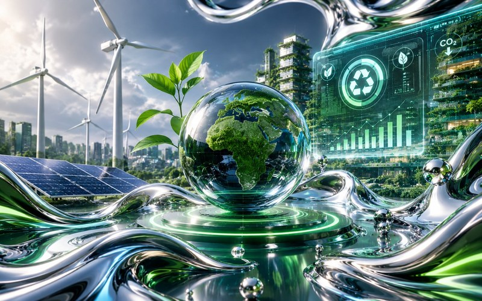
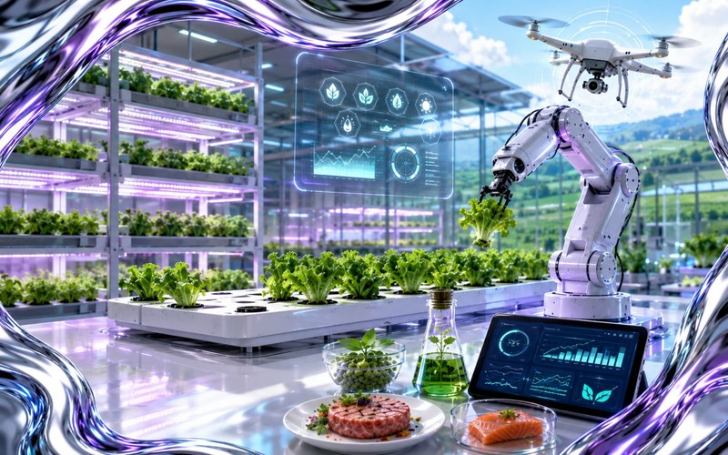
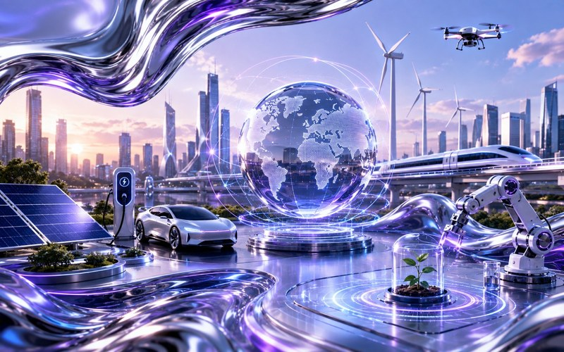

Kenal Pasti MasalahIdentify the Problem
Apakah masalah utama yang diselesaikan?What is the main problem being solved?
Bidang PertandinganCompetition Areas
Pilih satu daripada tujuh bidang rasmi NBIC 2026 berdasarkan fokus utama, masalah yang diselesaikan dan impak inovasi anda. Choose one of seven official NBIC 2026 areas based on your innovation's primary focus, problem solved and intended impact.
Pemilihan BidangChoosing an Area
Bidang pertandingan membantu peserta meletakkan inovasi dalam konteks yang paling relevan. Jika projek merentas beberapa disiplin, pilih bidang yang paling tepat menggambarkan fungsi, pengguna dan impak utamanya. Competition areas help position each innovation in its most relevant context. If a project spans multiple disciplines, choose the area that best represents its main function, users and impact.
Apakah masalah utama yang diselesaikan?What is the main problem being solved?
Siapakah pengguna atau penerima manfaat utama?Who is the primary user or beneficiary?
Bidang manakah paling menggambarkan nilai utama inovasi?Which area best represents the innovation's main value?
Panduan PantasQuick Guide
Pilih fokus utama projek untuk melihat cadangan awal. Keputusan akhir pemilihan bidang tetap perlu berdasarkan skop sebenar projek.Choose your project's primary focus for an initial suggestion. Final category selection should still reflect the project's actual scope.
Pilih satu fokus projek di atas.
Choose a project focus above.
Lihat BidangView Area →7 Bidang Rasmi7 Official Areas
Penyelesaian digital yang meningkatkan operasi, pengalaman pengguna, kecekapan organisasi atau capaian pasaran.Digital solutions that improve operations, user experience, organisational efficiency or market reach.

Inovasi yang menyokong kelestarian, kecekapan sumber, pengurangan sisa dan pembangunan ekonomi hijau.Innovations supporting sustainability, resource efficiency, waste reduction and green economic development.
Penyelesaian yang meningkatkan kesihatan, kesejahteraan, akses, keterangkuman atau kualiti hidup komuniti.Solutions that improve health, wellbeing, access, inclusion or community quality of life.
Automasi, robotik, sistem pintar dan teknologi pembuatan maju yang meningkatkan produktiviti serta kebolehpercayaan operasi.Automation, robotics, smart systems and advanced manufacturing technologies that improve productivity and operational reliability.

Inovasi makanan, pertanian, akuakultur dan sistem agro pintar yang menyokong produktiviti serta keselamatan makanan.Food, agriculture, aquaculture and smart agro-system innovations supporting productivity and food security.
Produk, perkhidmatan dan model keusahawanan yang mencipta nilai budaya, kreatif, sosial atau komuniti.Products, services and entrepreneurial models that create cultural, creative, social or community value.

Kategori terbuka untuk teknologi baharu dan idea berpotensi tinggi yang tidak sesuai ditempatkan secara tepat dalam bidang A–F.An open category for emerging technologies and high-potential ideas that do not fit precisely within Areas A–F.
Soalan BidangArea Questions
Langkah SeterusnyaNext Step
Teruskan ke Panduan Penyertaan untuk menyemak kelayakan dan keperluan sebelum pendaftaran.Continue to the Participation Guide to review eligibility and requirements before registration.